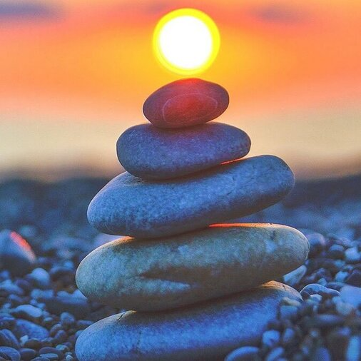

Во время отдыха я часто занимаюсь своими любимыми хобби, такими как чтение книг или готовка. Это помогает мне отвлечься от работы и насладиться творчеством. Я также люблю заниматься спортом или прогуливаться на свежем воздухе, чтобы поддерживать свое тело в форме. Иногда я предпочитаю просто отдыхать и ничего не делать. Это время, когда я могу насладиться покоем и размышлениями. Я люблю слушать музыку, смотреть фильмы или сериалы, и просто расслабиться.